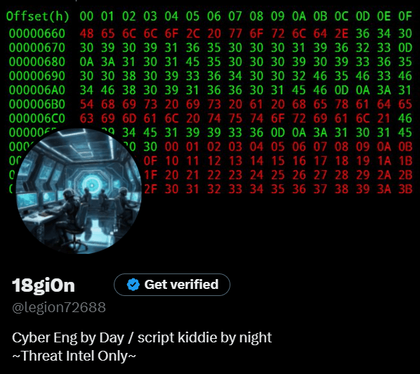

WHOAMI
Hey! Welcome to my corner of the cyber world. This blog is my personal space to learn, teach, experiment, and document everything I pick up along the way. I learn best by writing things down, so think of this place as a blend between a public notebook, a knowledge vault, and a playground for whatever cyber rabbit hole I fall into next.
I’ve always gravitated toward being a jack-of-all-trades in cybersecurity — red team, blue team, DFIR, cloud, threat intel, hardware tinkering — if it sparks curiosity, I’m diving in. (Well… everything except GRC.)
I started this blog not only to reinforce my own learning, but also to share projects, write-ups, home lab builds, weird ideas, and cyber experiments with anyone who finds them interesting. If you spot anything wrong, outdated, or cursed — call me out. I’m here to learn and improve, just like everyone else trying to level up in this massive ocean of professionals.
Outside of work, me and some buddies love running weekend CTF sessions. If you’re into rooting boxes, breaking stuff, and learning as a team, hit me up. Otherwise, I’ll see you in cyberspace or at DEFCON.
Contact Info
The best way to reach me is on X (formerly Twitter). Click the icon below to message me directly:
My DMs are open — feel free to reach out anytime.